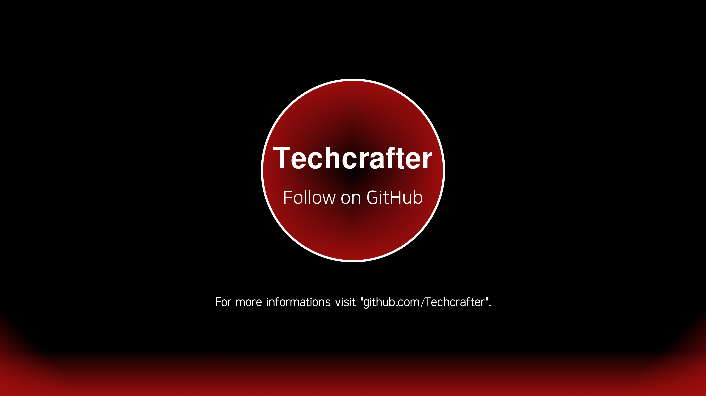

My projects
Feel free to help if you want to!
ENFERNON - An open source online game platform
Visit now
TAKEWAKE Reloaded - A free operating system in C and ASM


Download: Source code | Releases
Internomium 2 - The second part of the 2D space shooter game made with Unity which is especially designed for mobile platforms

Download: Source code | Releases
OnlineEdit - A simple website in HTML and PHP where you can work at your texts togehther with a team
Download: Source code | Releases
Internomium - An endless 2D space shooter featuring retro graphics made with Unity

Download: Source code | Releases
Internomium-for-calculator - A 2D space shooter for the TI-84 Plus CE-T calculator inspired by my original Internomium game

Download: Source code | Releases
Contact
Do you have any questions?
Feel free to ask at Techcrafter808@outlook.com!
